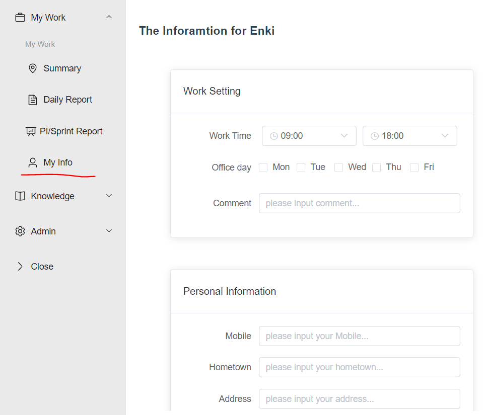
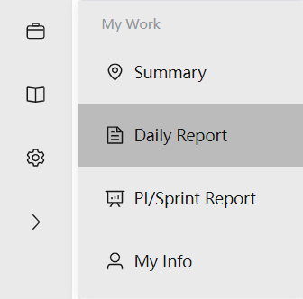

My Info页面用来设置用户基本信息，包括工作时间，哪几天在office, 还有Mobile, Home town, Address等信息。 信息修改后需要手动点击Save按钮进行保存.
User can enter daily report. The content of daily report need to be manually saved by clicking button Save.
User can export PI report.
User can view details of Changesets, Defects and Use Cases.